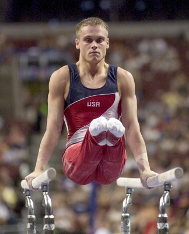

Alexander Artemev (USA)
2006 World PH Bronze Medalist
2006 and 2007 World Championships Team Member
2008 Olympic Team Bronze Medalist

Alexander was born on August 29, 1979, in Minsk. His father, Vladimir, was a member of the USSR gymnastics team in the late 1970s and early 1980s.
Competition Results
1998
JO Nationals: 1st AA (Class III)
1999
JO Nationals: 1st AA (Class III)
2001
Peter Vidmar Invitational: 1st AA (Class II)
2003
DTB Cup: 8th PH
US Championships: 8th AA
2004
DTB Cup: 4th PB, 6th PH
Pre-Olympic Test Event: 5th AA, 3rd PB, 3rd HB, 4th FX
US Olympic Trials: 10th AA
US Championships: 8th AA
2005
American Cup: 1st PH, 2nd FX
2006
US Championships: 1st AA, 1st PH, 1st PB
World Championships: 3rd PH
2007
American Cup: 4th AA
US Championships: 4th AA
World Championships: 4th Team
2008
Olympic Games: 3rd Team, 12th AA,
US Championships: 6th AA, 2nd PB, 5th PH, 6th V
US Olympic Trials: 5th AA
This page was created on June 26,
2010 and was last updated on September 4, 2011.
© Gymn Forum